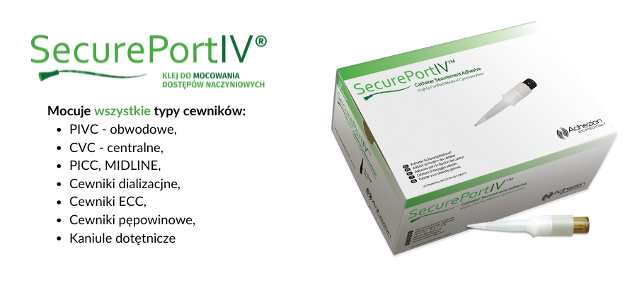
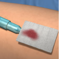
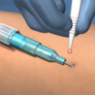
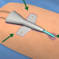
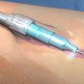

Stabilizacja dostępu
Pomaga ograniczyć ryzyko przemieszczenia cewnika i wspiera utrzymanie dostępu naczyniowego.
SecurePortIV™ to klej cyjanoakrylanowy przeznaczony do mocowania urządzeń dostępu naczyniowego. Wspiera stabilizację cewnika, ogranicza ryzyko przemieszczenia oraz pomaga tworzyć barierę mikrobiologiczną.
Produkt może być stosowany u dorosłych i dzieci, również u bardzo małych pacjentów.

Rozwiązanie zaprojektowane z myślą o stabilizacji dostępu naczyniowego i komforcie pracy personelu.
Pomaga ograniczyć ryzyko przemieszczenia cewnika i wspiera utrzymanie dostępu naczyniowego.
Wspiera ochronę miejsca wkłucia i może pomagać w ograniczaniu ryzyka zakażeń związanych z dostępem.
Prosty sposób użycia wspiera codzienną pracę personelu medycznego przy zabezpieczaniu cewników.
Zestawienie wybranych cech SecurePortIV™ i tradycyjnych metod mocowania dostępu naczyniowego.
| Cecha | SecurePortIV™ | Szycie | Plaster mocujący |
|---|---|---|---|
| Ryzyko infekcji | Niskie | Wyższe | Średnie |
| Czas aplikacji | Krótki | Dłuższy | Krótki |
| Komfort pacjenta | Wysoki | Niższy | Średni |
Porównanie ma charakter ogólny; wyniki kliniczne zależą od rodzaju dostępu, zastosowanej procedury i populacji pacjentów.
Przykładowy przebieg aplikacji produktu SecurePortIV™.

Oczyść i wysusz skórę przed aplikacją.

Nałóż 1–2 krople kleju centralnie na miejsce wkłucia.

Opcjonalnie nałóż klej pod skrzydełka lub obok cewnika.

Nałóż przezroczysty opatrunek zgodnie z procedurą placówki.
Zobacz materiały wideo dotyczące produktu SecurePortIV™.
Szczegółowe omówienie działania SecurePortIV™.
Obejrzyj filmSzybki przegląd zalet produktu.
Obejrzyj filmZastosowanie u bardzo małych pacjentów.
Obejrzyj film